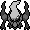

Pomeg glitch
0x1500 control code arbitrary code execution (Crystal) | Cart-swap arbitrary code execution | Generation I custom map script pointer | Generation I invalid meta-map scripts | Generation I item ("8F", "ws m", "-g m", "5かい", "てへ" etc.) | Generation I move ("-", "TM42") | Generation I Trainer escape glitch text boxes | Generation II bad clone | Generation II Burned Tower Silver | Japanese Crystal Pokémon Communication Center SRAM glitches | Coin Case glitch | Generation II glitch Pokédex sortings | Pikachu off-screen glitch ACE | OAM DMA hijacking | Pikachu glitch emote | Generation III glitch Pokémon summary | Generation III glitch move animation) | Remote code execution | TM/HMs outside of the TM/HM pocket | ZZAZZ glitch Trainer FC
[hr]
 No further extensions
No further extensions 
Cloning | Item duplication glitch (Generation I) | Pokémon merge glitch ("Q Glitch", Generation I) | Time Capsule exploit | Bug-Catching Contest data copy glitch (Generation II, Japan only) | Berry glitch | Battle Tower [email protected] glitch (Generation III) | (Mimic) Transform Rage glitch (Generation IV)
Transform held item glitch (Generation IV, Japan only) | Mimic glitch (Generation IV, Japan only)
[hr]
 Buffer overflow techniques
Buffer overflow techniques 
99 item stack glitch | LOL glitch | Rival LOL glitch | Instant LOL glitch | RAM LOL glitch | Out of bounds LOL glitch | blockoobLG | Instant encounter infinite chain glitch | LGFly | Super Glitch (Generation I) | Party remaining HP glitch | Super Glitch (Generation III) | Text pointer manipulation mart buffer overflow glitch | CoolTrainer♀-type move | Double distort CoolTrainer♀ corruption | Yami Shop glitch | Party Pokémon box data shift glitch | Unterminated name glitch item instant encounter (Japanese Red/Green)
[hr]
 Item stack duplication glitch (Generation I)
Item stack duplication glitch (Generation I) 
Generation I expanded items pack (Glitch Rocket HQ maps, Map FE (English and non-English European Yellow) | Map script pointer manipulation (arbitrary code execution | Map script pointer item ball manipulation) | Text pointer manipulation (arbitrary code execution | Item ball manipulation | Mart buffer overflow) | Trainerless instant encounter glitch
[hr]
 Bad clone glitch (Generation II)
Bad clone glitch (Generation II) 
????? party overloading (Type 0xD0 move glitch | ????? map corruption | Celebi trick | Celebi Egg trick | Shiny Celebi trick | Glitch move map corruption | Overloaded party map corruption | Glitch Unown (Glitch Unown map corruption) | Duplicate key items glitch (Infinite items and item creation, Expanded Balls pocket (Wrong pocket TM/HMs, Glitch Pokédex categories))
[hr]
 Closed menu Select glitches (Japanese Red/Green)
Closed menu Select glitches (Japanese Red/Green) 
Dokokashira door glitch (International) | Fossil conversion glitch (international) | Second type glitch | Skip to Level 100 glitch | Trainer mutation glitch | Walk through walls (International) | Lift glitch | Badge describer glitch
[hr]
 Pomeg glitch (Generation III)
Pomeg glitch (Generation III) 
Pomeg data corruption glitch ("Glitzer Popping") | Charm glitch
[hr]  Voiding (Generation IV)
Broken escalator glitch (Japan only) | Elite Four door glitch (Japan only)
[hr]
 2x2 block encounter glitches (Generation I)
2x2 block encounter glitches (Generation I) 
Left-facing shore tile glitch (in-game trade shore encounter trick, Old man trick, Trade link up shore encounter trick, Fight Safari Zone Pokémon trick) | Viridian Forest no encounter grass tiles glitch
[hr]
 Glitch City
Glitch City 
Safari Zone exit glitch | RAM manipulation | Out of bounds Glitch City (Generation II) | Slowpoke Well out of bounds corruption (French Gold/Silver/Crystal)
[hr]
 Large storage box byte shift glitch
Large storage box byte shift glitch 
Storage box remaining HP glitch | Generation I max stat trick
[hr]
 Pikachu off-screen glitch
Pikachu off-screen glitch 
[hr]
 SRAM glitches
SRAM glitches 
Generation I save corruption | 255 Pokémon glitch | Expanded party encounter table manipulation (Generation I) | Send party Pokémon to a new game (Generation I) | Generation II save corruption | Mailbox glitches | Mystery Gift item corruption | Trainer House glitches
Death-warp | Ditto trick | Experience underflow glitch | Mew trick | Text box ID matching | Meta-map script activation
[hr]
 Walk through walls
Walk through walls 
Ledge method | Museum guy method | Rival's effect | Select glitch method (International Select glitch method), Brock Through Walls
[hr]
 Surf down glitch
Surf down glitch 
Grass/rock Surfing glitch (Spanish/Italian only) (adaptions: Submerge glitch (international)) | 8 8 (0x7C) grass/rock surfing glitch (English Red/Blue))
| This article is incomplete. Please feel free to add any missing information about the subject. It is missing: {{{1}}}. |
| PRAMA Initiative a également une page sur Pomeg glitch. |

The Pomeg glitch (less often, the Pomeg Berry glitch) is an oversight regarding the Pomeg Berry's ability to decrease HP EVs. It allows a Pokémon to attain 'negative' health.
If the player uses a Pomeg Berry at a low amount of HP, the glitch may be abused to reduce the Pokémon's HP below zero. Its HP will then roll down from (2^16)-1 or 65535 HP due to hitpoints being a unsigned, two byte integer. In Emerald Version, this enormous health quantity will be displayed as '?35'.
There are many different tricks that the player can exploit with the Pomeg gltich for Ruby, Sapphire, Emerald, FireRed, LeafGreen, Diamond, Pearl, Platinum; including a major glitch technique called Glitzer Popping. Reducing a Pokémon's HP to negative values through use of a Pomeg Berry has been made impossible in all games from Pokémon Black and White onward.
Contents
Requirements
- A Pomeg Berry.
- A Pokémon with at least 10 HP EVs at a level in which it would lose at least one HP with the Pomeg Berry (e.g. a level 100 Pokémon would lose 2 HP).
- A Pokémon with a relatively low amount of HP.
Procedure
- Reduce the Pokémon's HP to 1. This can be done by poisoning the Pokémon, or if a Pokémon with an odd amount of HP uses Curse twice.
- Use the Pomeg Berry to obtain negative HP or 0 HP.
Exploits
Once a Pokémon attains this HP value, it may be exploited to abuse other oversights in the game.
For example, the Pokémon's health will become 0 when a healing item (Potion, Oran Berry, etc.) is used on it. This means that the player may have a team that is unable to battle, but will not white out as normal.
Pokémon with ?35 HP may be traded to Pokémon Ruby and Sapphire as well as Pokémon FireRed and LeafGreen, where different sub-glitches may take place.
However, the large amount of HP will be healed away if traded to Pokémon Crystal or Pokémon XD: Gale of Darkness. If migrated to Pokémon Diamond, Pearl and Platinum or Pokémon HeartGold and SoulSilver, the Pokémon's health is also restored to normal values as it is deposited into the PC.
In all core games
Switch glitch
- Main article: Switch glitch (Generation III)
The switch glitch is a sub-glitch of having all fainted Pokémon which allows for the player to send out an invalid Pokémon.
The invalid Pokémon differs depending on the version. It may be a Bad Egg in Pokémon Ruby and Sapphire, a scrolling beige box in Pokémon FireRed and LeafGreen or a YOP in Pokémon Emerald.
In Pokémon Ruby and Sapphire
In order for a Pokémon to obtain ?35 or another 'negative HP' value in Pokémon Ruby and Sapphire, one may trade the Pokémon from Emerald.
Using healing items on a Pokémon with ?35 HP (or similar HP values) will not cause the Pokémon to faint. Instead, the Pokémon will be healed to full health.
However, it is still possible to cause Pokémon to faint outside of battle without whiting out in these games, as it is only healing items specifically that cannot be used. HP Ups can be used to gain the exact amount of HP required to raise a Pokémon's health to 0, for example. Rare Candies and evolution stones may be used similarly.
Pokémon Emerald, Pokémon FireRed and LeafGreen
Battling with an Egg
When the player's last active Pokémon is fainted through use of a Pomeg Berry, Eggs may be forced to battle when they are in the first slot. In this case, the Pokémon inside the Egg is sent into battle. An Egg will count as a 'fainted Pokémon' if the Pokémon inside of the Egg faints in battle and the player wins.
When an Egg is sent into battle, the Pokémon inside the Egg will be displayed, with its palette changed to that of the red-and-beige Egg. The Pokémon inside of the Egg is capable of leveling up; hence, it is possible to hatch an Egg into a Pokémon in a secondary or final evolutionary stage. If a Nincada is evolved while in an Egg, an extra Egg will appear in the party after that battle if there is an open slot. This Egg will hatch into a Shedinja.
Battling Eggs may be poisoned, and can faint in the overworld as a result. The player will not white out, and the message that announces that the Poisoned Pokémon has fainted will not appear. If there is another non-fainted Pokémon in the player's party, the player will constantly encounter brief delays when travelling, as the game treats the Egg as though it has faints every 4 steps.
Fainted Eggs may be revived to full health using a Sacred Ash, but this will not cure status conditions (including Poison). When this occurs, the Egg's full HP value will be momentarily displayed.
Evolving an Egg
Pokémon that evolve through trading (Graveler, Machoke and Kadabra) will evolve if traded to another game while in an Egg. This will cause the amusing declaration that "Egg is evolving!" followed by the traditional evolution sequence with an Egg slowly evolving into a Golem, Machamp or Alakazam.
Glitzer Popping
- Main article: Glitzer Popping.
Glitzer Popping is a glitch derivative of the 'sending out a ??????????' glitch that allows for data corruption; most notably the Pokémon in storage box 1 and 2 (from box 1 slot 1 to box 2 slot 23) which may be turned into Bad Eggs, Eggs (or less commonly after a 'double corruption'): a Pokémon which isn't interpreted as an Egg.
To activate Glitzer Popping, the player may view the summary of a Pokémon in the party after sending out the ??????????, scroll up to access Cancel and then scroll up again to access Pokémon beyond slot six beginning from Pokémon 255. Each time a Pokémon beyond slot 6 is selected (actually a region of unrelated data) the game will try to set the aforementioned bits; possibly corrupting data.
The name Glitzer Popping is assumed to have no relevance to the glitch in itself and was coined by speedrunner werster as he didn't want the glitch to have a name that (in his opinion) would be 'too generic'.
In this glitch the bits of non-existing Pokémon are set (specifically bit 0 at offset 0x13, bit 2 at offset 0x13, and bit 6 at offset 0x07 from the 'Miscellaneous' data substructure); allowing for the corruption of data such as stored Pokémon, Day Care data, Pokémon Contest data, map data, flag data, bag data, PC item data, Battle Frontier data as well as Secret Base item data.
Glitzer Popping has been used to obtain any Pokémon in the game and many glitch Pokémon. It is exploitable by keeping specific Pokémon with a certain personality value and specific attributes in the storage box. Examples include the in-game trade Horsea "Seasor" with the personality value $0000007F, or Seedot "Dots" with the personality value $00000084. These Pokémon may be corrupted into an Egg with a personality value of $4000007F or $40000084 with a species ID based on the Pokémon's Attack and HP EVs.
A successful corruption can take many attempts due to the address randomization mechanic known as DMA, in which the locations of addresses are randomized to one of 64 possible locations after actions such as opening the Pokémon menu or entering battle. In order to make the success rate more likely, a Pokémon to 'absorb' an unwanted corruption known as an corruption initiator may be placed next to the Pokémon the player wants to corrupt.
Glitzer Popping is also an access point for many exploits such as:
- Double corruption.
- Decaswitch.
- Fast cloning.
- Fast inverse cloning.
- "Guess Who?" glitch.
- Instant victory.
- Pokémon News Reporter corruption.
- Stealing other Trainer's Pokémon.
- Surfing/Walking on Cycling Road.
- Unlocking Faraway Island (French, Spanish, Italian versions).
- Unlocking Southern Island.
- Trainer script corruption.
Healing with Eruption or Water Spout
- Main article: Heal with Eruption or Water Spout glitch.
A Pokémon with negative HP which uses Eruption or Water Spout may actually heal the opponent if the user has high enough Special Attack and the foe has low enough Special Defense.
For example, this may be exploited with a level 100 Kyogre with +2 Special Attack against a low level Geodude at Granite Cave.
Sending out a ??????????
The Pomeg glitch may be used to send out a '??????????', or 'Decamark', into battle in Ruby, Sapphire, FireRed, LeafGreen and Emerald versions. (Doing this in R/S/FR/LG requires the Pokémon with ?35 HP to be traded from an Emerald version.)
The player's team must consist of at least three Pokémon:
- A Pokémon with ?35 HP (in the first slot)
- A fainted Pokémon or an Egg (the player may have as many as they like)
- A Pokémon to switch into (in the last slot) - a "switch Pokémon".
Enter a battle, and switch from the Pokémon with ?35 HP into the Pokémon in the last slot. Escape from battle and get rid of the Pokémon in the last slot that was switched into. (It can be deposited in the PC, released, or put into the Day Care - but it must no longer be in the party.)
After using a healing item to faint the Pokémon with ?35 HP (or if the Pomeg Berry faints the Pokémon without giving it negative HP), entering a battle will cause the player to send out a '??????????'/'Decamark'.
Sprite glitch
- Main article: Pomeg glitch sprite glitch
Charm glitch
- Main article: Charm glitch.
After performing the steps which activate the sprite glitch, if the Pokémon gets hit by an attacking move and uses Charm, various graphical glitches may occur after the user or the foe performs a specific move.
Trade evolution
Pokémon that evolve through trading (Graveler, Machoke and Kadabra) will evolve if traded to another game while in an Egg. This will cause the amusing declaration that "Egg is evolving!" followed by the traditional evolution sequence with an Egg slowly evolving into a Golem, Machamp or Alakazam.
Status screen glitch
- Main article: Status screen glitch
A sub-glitch of excessive HP in Pokémon FireRed and LeafGreen which allows for the player to view glitched sprites that can freeze the game.
| Reported by VaeporSage Verified by VaeporSage |
In Pokémon Diamond, Pearl and Platinum
| PRAMA Initiative a également une page sur Pomeg glitch. |
In Diamond, Pearl and Platinum Versions the Pomeg glitch returns but is more difficult to exploit.
Healing items cannot be used on Pokémon with HP values below 0 however; it is still possible to underflow the Pokémon's HP and faint the Pokémon with a Rare Candy.
It is possible to corrupt some of the static encounters in the game like Rotom or Giratina with the "7th" Pokémon of your party and turn them into another species. This is currently being investigated as it could lead to being able to encounter any of the 493 species in the game once understood.
Fainting a Pokémon
Fainting a Pokémon on the overworld is harder than it was in Pokémon Ruby, Sapphire and Pokémon Emerald. The Pomeg Berry won't lower the player's current HP if using it would result in exactly 0 HP; so they would need to get negative HP first and then use a Rare Candy to raise its HP; hopefully to 0.
With the following expression one can work out how much HP on the Pokémon they need to faint it after using the Pomeg Berry and then the Rare Candy.
Remaining HP = (HP lost through use of a Pomeg Berry) - (HP gained through use of a Rare Candy after using a Pomeg Berry)
For example, consider a level 99 Azumarill with 244 HP EVs and 32 HP left that gains 4 HP upon leveling up with a Rare Candy. Using the Pomeg Berry will cause it to drop 36 HP resulting in -4 HP ("32 HP" with a full health bar), and the Rare Candy can be used to "raise" Azumarill's HP to 0.
When the player raises (not lowers) a Pokémon's HP to 0 and it results in all Pokémon being fainted they do not black out (this is the same behaviour as in Generation III).
Sending out a -----
If the player enters a Trainer battle with all fainted Pokémon such as one of the Trainers in the Battleground (in the Survival Area of the Battle Zone), then they may send out a shiny level 0 male "-----" with 0 HP which may have a long name filled with blank characters. In "What will (x) do?", "do?" may be invisible.
By opening the Pokémon menu, the player can see nothing in the first slot but the fainted Pokémon in the second slot. They can revive the second Pokémon and this will make the game prompt them to send it out on the next turn.
| Reported by Ownagemuch Verified by Various |
In Pokémon HeartGold and SoulSilver
The Pomeg glitch cannot be done in Pokémon HeartGold and SoulSilver as the Pomeg Berry never seems to reduce the Pokémon's HP.
If a cheating device is used to get all Pokémon in the party with 0 HP, a walking Pokémon glitch where the walking Pokémon stays on the spot is possible.[clarification needed]
Notes
- Shedinja cannot be used to exploit the Pomeg glitch regardless of its effort value in hitpoints because its HP will always remain at 1.
- If the Pokémon receiving 'negative HP' knows or learns the move Softboiled, it can be used to restore the hitpoints of many Pokémon, without the need of large amounts of recovery items.